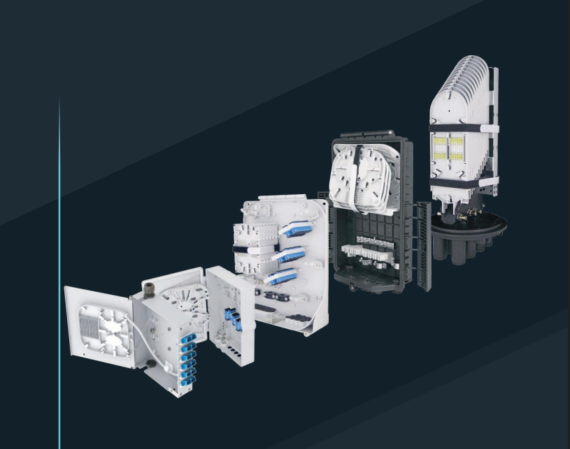
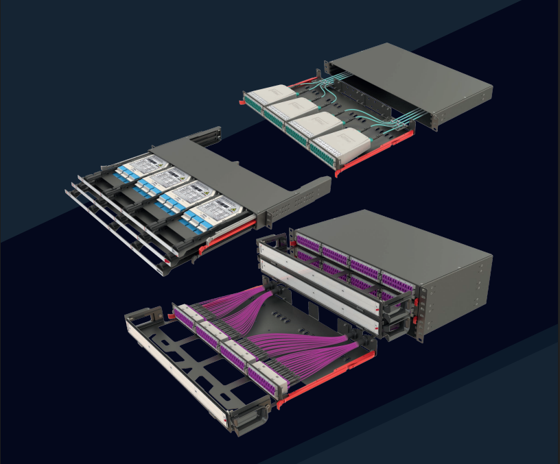
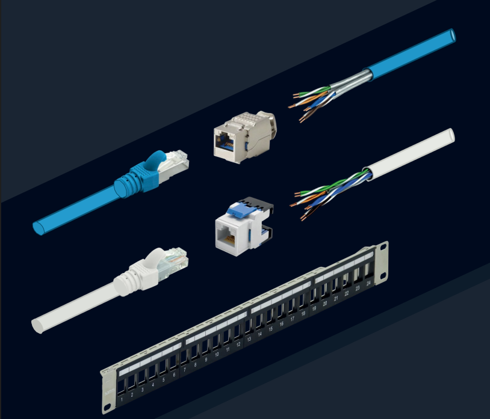
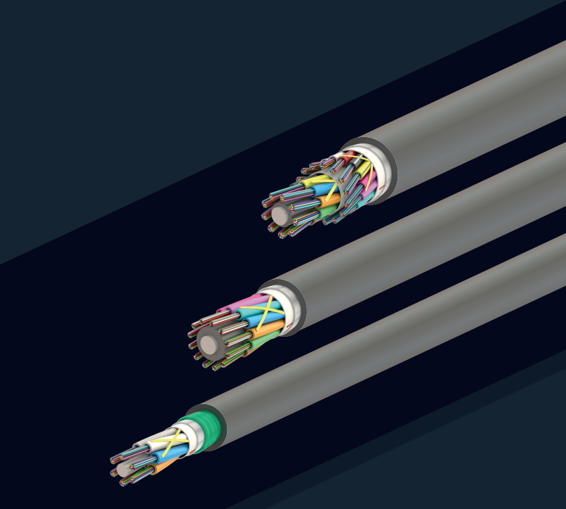
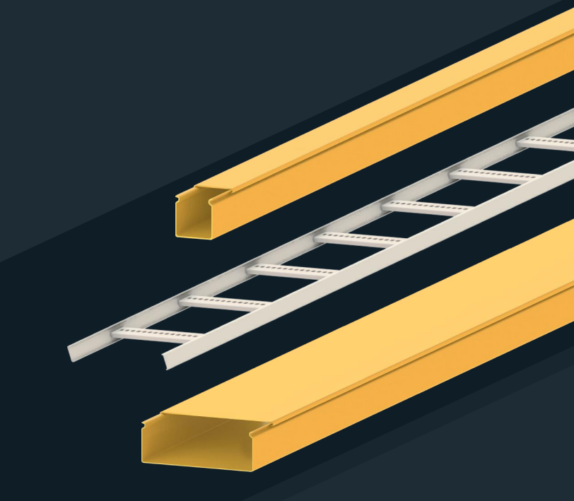

Productos Destacados
Soluciones completas en fibra óptica

Cajas de Fibra Óptica
Protección y organización para empalmes

Redes para Centros de Datos
Infraestructura de alta capacidad

Cableado Estructurado
Sistemas completos para redes de datos

Cables de fibra para interiores
Amplia variedad en cables de interiores

Cables de fibra para exteriores
Amplia variedad en cables para exteriores

Estructuras para Cables
Soluciones para las estructuras de cableado